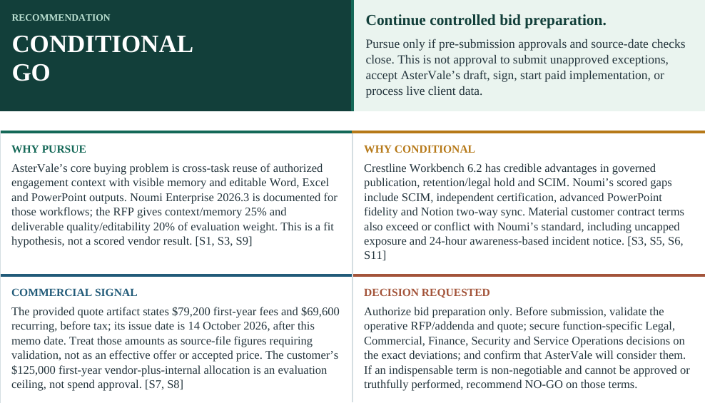

I’m preparing an internal Go/No Go recommendation for the AsterVale opportunity. Please bring together the requirements, contract review, competitive comparison and win/loss analysis in a Word document. Start with a concise decision summary, then show the supporting evidence, key risks, and the conditions, owners and approvals needed to proceed.
For this kind of internal brief, I prefer the opening to make the recommendation, evidence and decisions needed easy to scan before the detailed analysis.
Noumi
Found 5 files connecting the bid decision to product fit, contract risks and buyer evidence.
- Opportunity context: AsterVale_Opportunity_Brief.md
- Requirements fit: AsterVale_Requirements_Matrix.xlsx
- Contract exposure: AsterVale_Clause_Review.xlsx
- Competitor trade-offs: AsterVale_Product_Comparison_Noumi_vs_Crestline.xlsx
- Buyer win/loss signals: AsterVale_CRM_Win_Loss_and_Competitive_Analysis.html
Noumi remembered your preference

The opening places the recommendation, supporting reasons and decision requested before detailed analysis.
Internal briefs begin with the recommendation, supporting evidence and decisions needed.
DONECompleted
5 source files selected · 1 deliverable shown. Previews below are rendered from the supplied files.
Prepared the Word decision memo with the recommendation, supporting evidence and decisions needed first.
Conditional Go: continue controlled bid preparation while source checks and pre-submission approvals remain open.
Focus: unresolved contract exposure, product gaps and inconsistent source dates require owner review.
Next: validate the operative sources and resolve the exact deviations before deciding whether to submit.